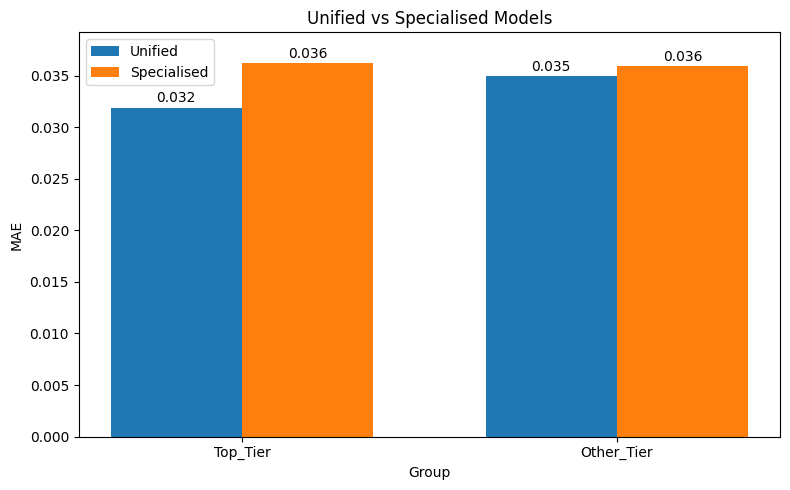

F1 AI/ML — Predictive Bias & Fairness
Using disaggregated machine-learning models to investigate predictive fairness in Formula 1 pit-stop data.
In plain terms: I investigated whether a model trained on F1 data performed similarly across teams, then tested whether specialised models could reduce the gap in prediction error.
With Momena
The question
Can a machine-learning model look accurate overall while still making systematically different errors for different groups?
We investigated this using Formula 1 pit-stop data, using constructor tier as the grouping attribute and Mean Absolute Error (MAE) to measure the difference in prediction error between groups.
Why it mattered
The project connected a practical ML problem with responsible-AI thinking. A model should not be judged only by one overall performance number if its errors are substantially different across groups.
Read the full case study ↓
01 — From raw data to a model
Explore
Cleaned and analysed F1 pit-stop data with Python and Pandas.
Engineer
Selected stint length, air temperature, tyre compound and constructor information.
Baseline
Built a Decision Tree Regressor to predict Lap Time Variation.
Diagnose
Calculated subgroup MAE to identify the predictive disparity.
Disaggregate
Split the training data by team tier and trained two specialised models.
Evaluate
Compared the two approaches and measured the change in the fairness gap.
02 — What the results actually showed
The main result was clear: splitting the model by team tier substantially reduced the gap in prediction error. However, the specialised models also had higher individual MAE, so the improvement came with a trade-off between predictive parity and overall error.

See the exact numbers
| Approach | Top-tier MAE | Other-tier MAE | MAE disparity |
|---|---|---|---|
| One shared model | 0.0319 | 0.0350 | 0.00305 |
| Two specialised models | 0.0362 | 0.0360 | 0.00024 |
03 — What I worked on
Hands-on ML work
- Worked in Google Colab with the project dataset.
- Contributed to data inspection and cleaning.
- Worked with feature selection, categorical encoding and train/test splitting.
- Built and evaluated Decision Tree regression models.
- Compared subgroup MAE and calculated the change in predictive disparity.
Responsible AI + communication
- Interpreted the fairness implications of the modelling results.
- Worked collaboratively with my project partner, Momena.
- Presented our results to the wider group and mentees.
- Represented our group in a Femetronics panel discussion.
- Explained how the project connected machine learning, F1 data and ethical considerations.
🎙 Presenting the project
One of the parts of the programme I value most was having to communicate the project beyond the notebook. At a Femetronics panel event, I represented our group and explained what we investigated, how we used machine learning, what predictive bias meant in our project, and why fairness and ethical considerations matter when working with data.
Technical ability → critical thinking → communication → representation.